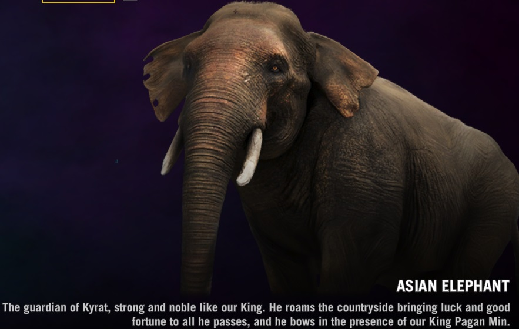
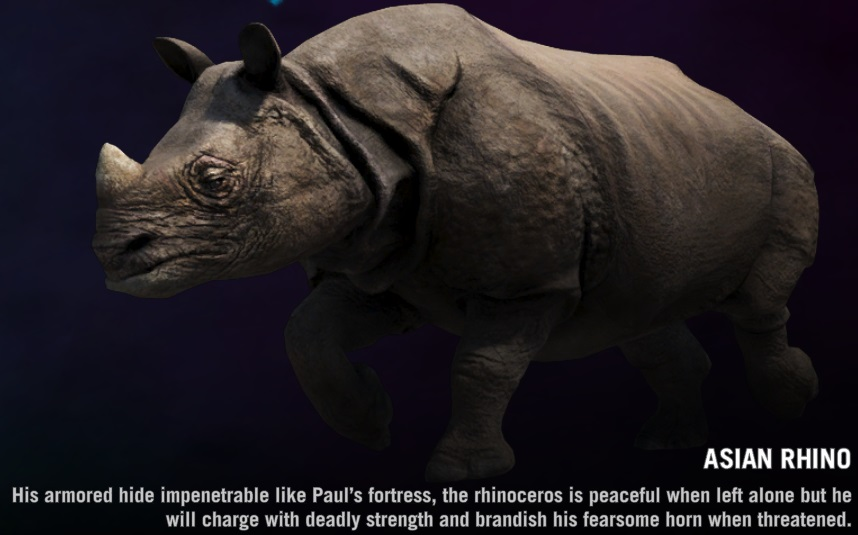
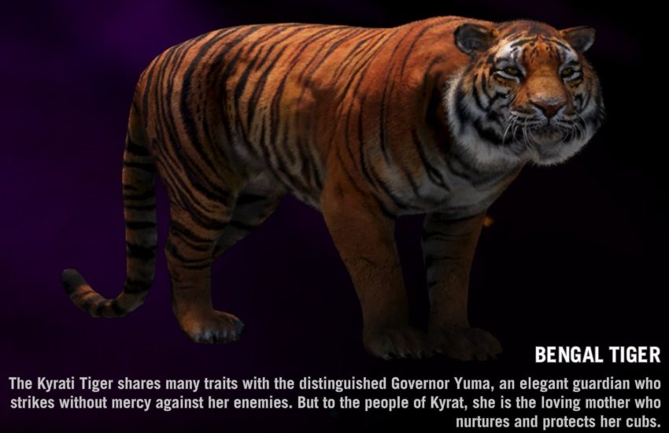
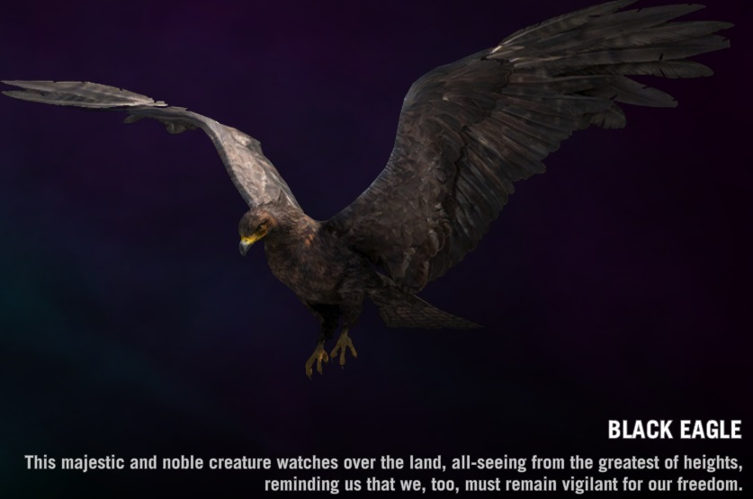
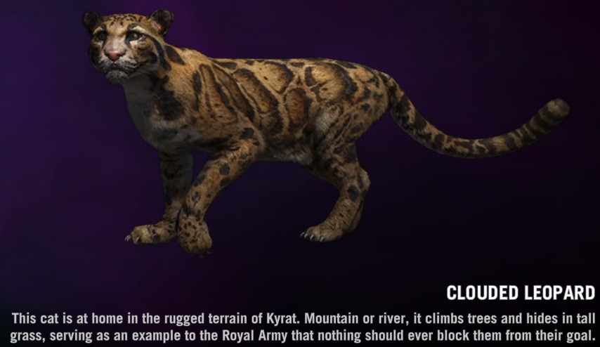
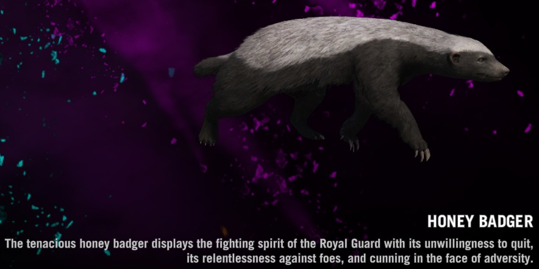
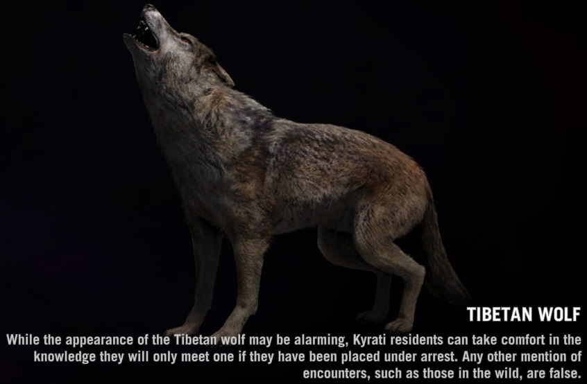
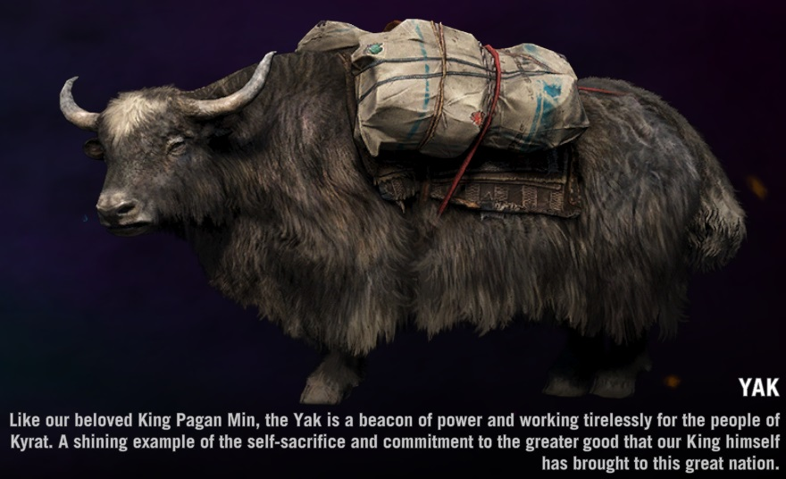

The majestic and dangerous elephant. You can gain skills to be able to ride one of these creatures. While riding them, the are one of the most powerful weapons in the game.
One of the most powerful animals in the game. Its armor is tough and hard to penetrate. They are gentle but if provoked they will charge.
One of the fastest animals in the game. Hides in tall grass and strikes without warning. Best to avoid its hunting grounds or be ready to be ambushed.
A large and dangerous bird native to Kyrat. It will strike from above unprovoked and attack until its' prey is dead. Keep your eyes up in order to avoid this predator.
Another stealthy and fearsome predator in Kyrat. Is also able to hide in tall grass and silently stalks its' prey. Best to avoid its hunting grounds if you want to avoid a fight.
One of the most relentless creatures in Kyrat. It is incredibly aggressive and will fight until the death to kill its prey. Can take enourmous amounts of damage before it dies.
Another fearsome predator of Kyrat. This animal usually hunts in packs of 3-5 members. They are fast and smart and if you run into one of them, be ready for more.
A large and strong creature in Kyrat. It is a gentle creature but if you get too close it will attack. Once provoked, it is an incredibly hard animal to take down.
